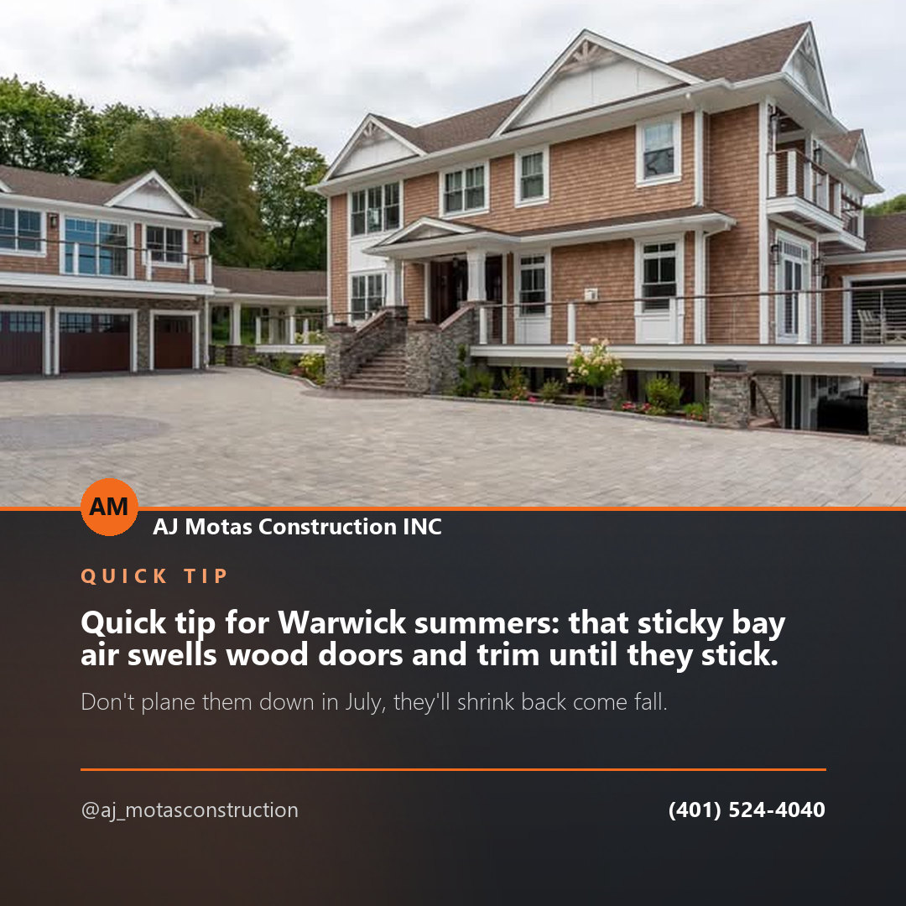

Post idea · Facebook
Quick tip for Warwick summers: that sticky bay air swells wood doors and trim until they stick. Don't plane them down in July, they'll shrink back come fall. Run a dehumidifier first, then judge. Questions on your home?